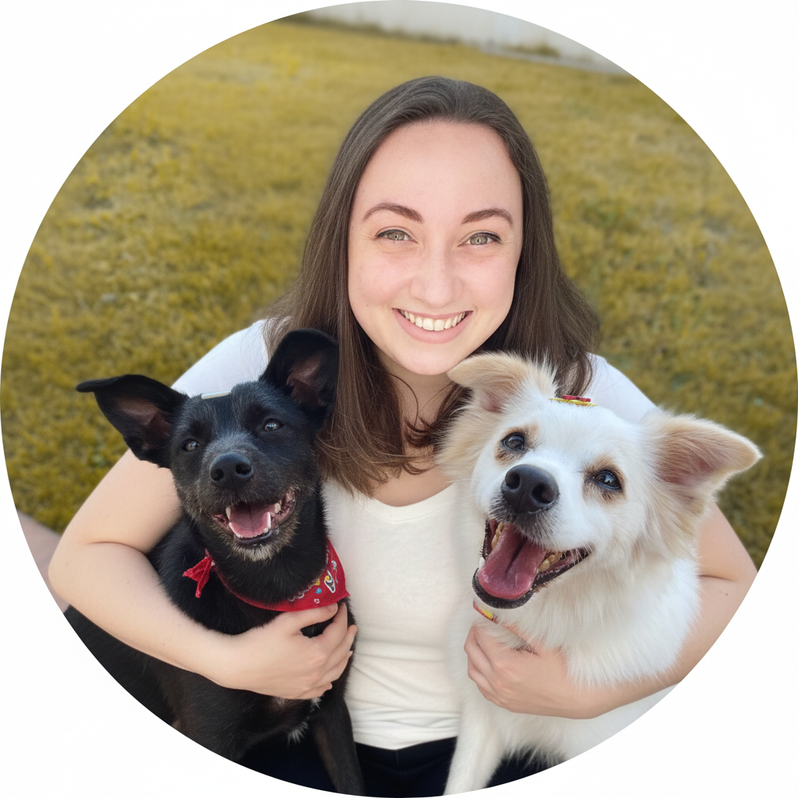

Sobre a Laryssa...
Sou Laryssa, tenho 28 anos, sou natural de Joinville, Santa Catarina; sou Co fundadora do Projeto Eu Abrigo. Esse sonho surgiu na Faculdade, onde tive que pensar em um projeto de extensão, e percebi a carência e a necessidade de uma plataforma que ajudasse animais e donos a se encontrarem de uma forma mais simples.
Por isso, desenvolvi este lugar onde animais podem encontrar um lar e humanos se tornar lar. Sou abrigo e lar para dois vira latas lindos, Kaisa e Loki, e foi a melhor decisão da minha vida, foi isso que me inspirou a mover o mundo numa direção de mais acolhimento e amor.
Ver Animais Disponíveis
